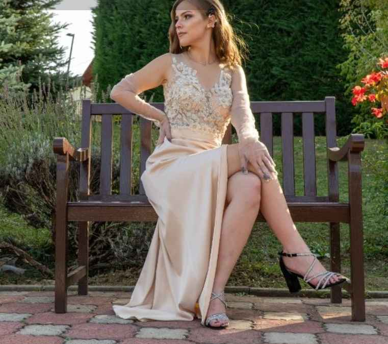

Gorgan.Cr.Tania@student.utcluj.ro
„Cunoașterea înseamnă a ști că nu știi nimic.”
— Socrate
| Denumirea disciplinei | Perioada de studiu | Link fișa disciplinei |
|---|---|---|
| Informatică aplicată | Semestrul 1 | Fișa disciplinei |
| Algebră liniară și geometrie analitică și diferențială | Semestrul 1 | Fișa disciplinei |
| Componente și circuite pasive | Semestrul 1 | Fișa disciplinei |
Așteptările mele în ceea ce privește educația sunt: